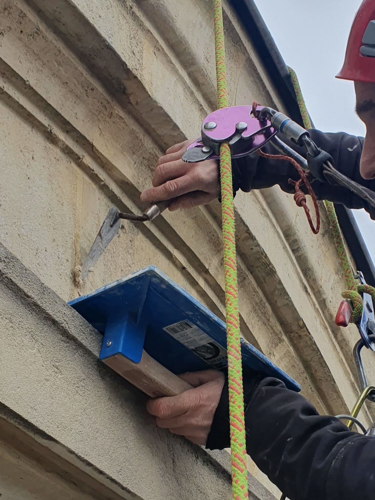

Restauration de Pierre
Conservation et restauration du patrimoine sculpté et des façades en pierre de taille.

Ornementation & Moulures
Restauration et reconstitution fidèle de corniches, bandeaux et moulures d'époque. Nous redonnons vie aux reliefs architecturaux dégradés.
Sculpture & Bas-Reliefs
Intervention spécialisée sur les éléments sculptés, statues et blasons en façade. Taille de pierre de précision en accès difficile.
Nettoyage & Gommage
Élimination des croûtes noires et de la pollution par micro-sablage ou nébulisation, dans le respect total du calcin de la pierre.
Reprise structurelle
Remaillage de pierre, injection de coulis de chaux et pose d'agrafes inox pour stabiliser les éléments de façade instables.
Votre façade est votre patrimoine
Nos techniciens sont formés aux techniques de restauration traditionnelle pour le bâti ancien.
Demander un devis